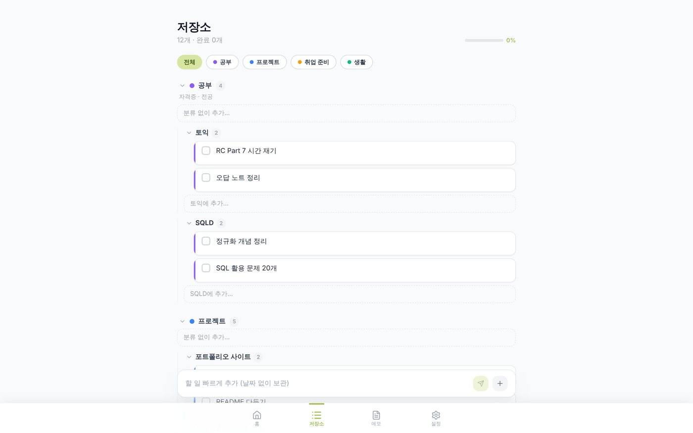
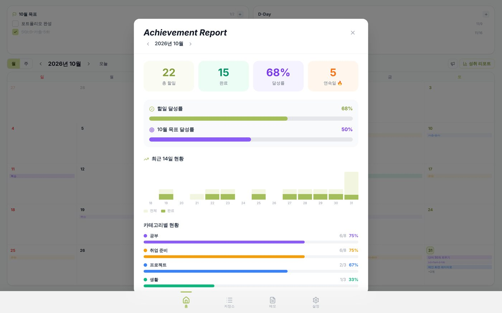
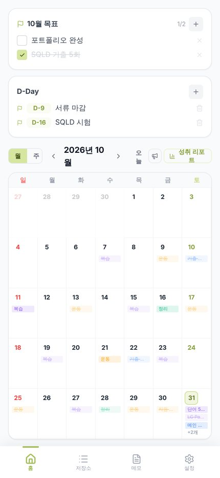
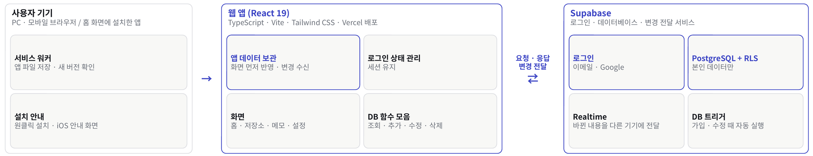

01
개요




문제
- 날짜 없는 “언젠가 할 일”과 날짜가 정해진 일정을 따로 관리하다 보니 놓치는 일이 생김
해결
- 할 일을 저장소에 쌓아 두고, 할 날이 되면 “오늘로” · 날짜 지정으로 일정에 배치
- 모든 기기에서 즉시 동기화
- 기능
- 월간 · 주간 캘린더, 월간 목표, D-Day, 메모, 성취 리포트, 다크 모드
- 설치
- PWA로 홈 화면 설치, 새 버전 알림
- 결과
- 체크리스트 묶음을 카테고리 · 하위카테고리 · 할 일 3단 구조로 전환, 기존 데이터는 SQL 1회로 자동 변환
02
로그인 · DB · 변경 전달은 Supabase로

RLSDB 단계 데이터 보호
본인 user_id 행만 읽기 · 쓰기, 공지 작성은 관리자만
Realtime기기 간 동기화
할 일 · 카테고리 · 하위카테고리 · 메모 · 공지 변경을 즉시 반영
낙관적 업데이트즉시 반응하는 화면
화면을 먼저 갱신하고 DB에 저장
내 작업
03
할 일 구조 전환 (v2.0)
이전
할 일 “토익” (10/31)
☐ 단어 50개 ☐ LC 1회 ← 하위 항목
하위 항목은 날짜 · 마감일 · 메모를 가질 수 없고, 나눠 옮기면 같은 제목 할 일이 흩어짐
변경 후
카테고리 “공부” › 하위카테고리 “토익”
☐ 단어 50개 (10/31, 마감 11/2) ☐ LC 1회 (11/1)
모든 할 일이 날짜 · 마감일 · 메모를 따로 가짐
기존 데이터를 SQL 1회로 자동 변환
① 묶음 찾기하위 항목이 있는 할 일 = 묶음으로 쓰던 항목
② 하위카테고리로같은 제목 묶음은 하나로 합침
③ 할 일로 승격하위 항목 → 할 일, 날짜 · 마감 · 시간 상속
④ 정리원래 묶음 삭제, 이전 테이블은 보존
전체를 한 트랜잭션으로 실행해 중간에 실패하면 전부 취소, 다시 실행해도 안전하게 작성
04
증상과 실제 원인이 달랐던 문제
| 문제 | 실제 원인 | 해결 | 결과 |
|---|---|---|---|
| 사용 중 화면이 홈으로 튕김 | 로그인 유지 정보가 자동 갱신될 때 앱이 새 로그인으로 인식 → 데이터를 다시 불러오고 시작 화면으로 이동 | 사용자가 실제로 바뀔 때만 다시 불러오고, 시작 화면 이동은 처음 한 번만 | 쓰던 화면 유지, 갱신 때마다 하던 불필요한 전체 재조회 제거 |
| 새로 추가한 할 일이 목록에서 사라짐 | 드래그 순서용으로 목록을 따로 복사해 둠 → 이후 추가 · 변경은 원본에만 반영되고 화면은 옛 복사본 표시 | 복사본을 없애고 앱 전체가 함께 쓰는 원본 데이터를 바로 사용 | 원인 하나로 두 증상 해결 (저장소 변경이 홈에 안 보이던 문제 포함) |
| 설치한 앱(태블릿)에 새 버전이 안 뜸 | 홈 화면에 설치한 앱은 다시 열어도 새로고침 없이 이어서 실행 → 새 버전을 확인할 기회가 없음 | 1시간마다, 그리고 앱으로 돌아올 때 새 버전을 확인하고, 강제 새로고침 대신 “새 버전” 안내 | 배포 후 설치한 기기에도 새 버전 반영, 새로고침 시점은 사용자가 선택 |